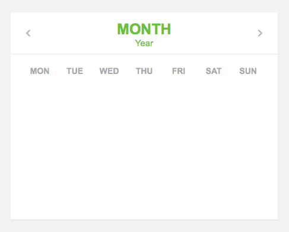
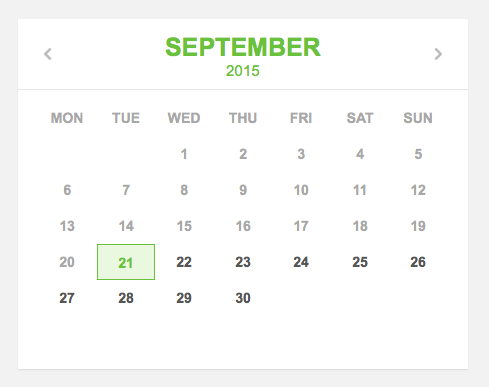
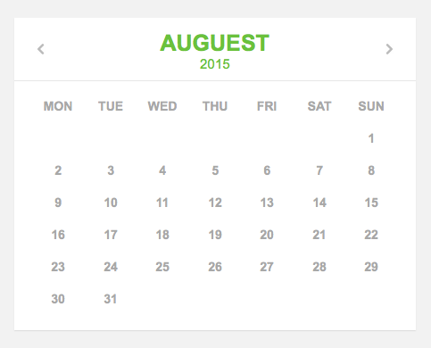
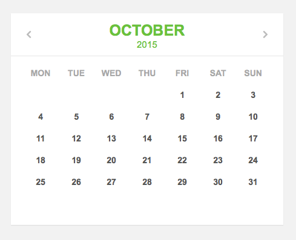

当我们需要在页面中显示某月的事项，或是选择某一段日期时，常常要使用到日历组件。这一组件同样有着许多现成的类库，然而亲自动手开发一个日历，从中了解其实现原理也是非常必要的。在本例中我们就将制作一款非常经典的日历组件。
更多精彩内容欢迎访问我的个人博客皮皮猪：http://www.zhsh666.xyz或者http://www.zh66.club期待您的光临哦！我是皮皮猪，感谢各位光临，能为您排忧解难小站深感荣幸！祝您生活愉快！
本例的HTML代码如下：
<div class="calendar">
<div class="title">
<h1 class="green" id="calendar-title">Month</h1>
<h2 class="green small" id="calendar-year">Year</h2>
<a href="" id="prev">Prev Month</a>
<a href="" id="next">Next Month</a>
</div>
<div class="body">
<div class="lightgrey body-list">
<ul>
<li>MON</li>
<li>TUE</li>
<li>WED</li>
<li>THU</li>
<li>FRI</li>
<li>SAT</li>
<li>SUN</li>
</ul>
</div>
<div class="darkgrey body-list">
<ul id="days">
</ul>
</div>
</div>
</div>由以上代码可见，日历的最外层是一个类名为calendar的div元素，其内部包含了两大部分，分别是日历顶部的标题区域，其类名为title，以及其下方的日期区域，其类名为body。
在title中包含了当前所选日期的月份、年份，其id分别为calendar-title和calendar-year，此外该元素还包括了prev和next两个按钮，分别用于切换选择上一月和下一月。
在body中首先包含了一个周一到周日的英文表头，它们放在一个ul元素中。在表头之后是另一个div元素，用于显示日历主体。其中，日历所选月份的每一天都将显示在该元素内部的days列表中。
本例中大部分的基础CSS样式省略介绍，在此仅介绍其中的body-list类。该类用于设置日历表头和日期数据的栅格显示。我们将整个ul元素的宽度设置为100%，并将其除以7，就可以得到每一个li元素的宽度，即14.28%，将这些元素左浮动显示，就可以得到日期的7列显示，样式代码如下：
.calendar{
width:450px;
height:350px;
background:#fff;
box-shadow:0px 1px 1px rgba(0,0,0,0.1);
}
.body-list ul{
width:100%;
font-family:arial;
font-weight:bold;
font-size:14px;
}
.body-list ul li{
width:14.28%;
height:36px;
line-height:36px;
list-style-type:none;
display:block;
box-sizing:border-box;
float:left;
text-align:center;
}此外，我们为今天、今天之前及今天之后的日期分别创建了不同的类。其中，用浅灰色来显示过去的日期，深灰色来显示将来的日期，日期当天则使用浅绿色背景、绿色文字加以显示，样式代码如下：
.lightgrey{
color:#a8a8a8; /*浅灰色*/
}
.darkgrey{
color:#565656; /*深灰色*/
}
.green{
color:#6ac13c; /*绿色*/
}
.greenbox{
border:1px solid #6ac13c;
background:#e9f8df; /*浅绿色背景*/
}日历组件的初始显示效果如下图所示。

接着使用JavaScript来动态生成日历信息。首先，我们要做一些前期的准备工作。由于闰年和非闰年的二月天数是不一样的，在此我们为这两种年份分别创建数组，以便于获取每个月的天数，同时为每个月份的英文名创建相应的数组变量，代码如下：
var month_olympic = [31,29,31,30,31,30,31,31,30,31,30,31];
var month_normal = [31,28,31,30,31,30,31,31,30,31,30,31];
var month_name = ["January","Febrary","March","April","May","June","July","Auguest","September","October","November","December"];然后，为页面中的各种元素创建变量，以便于后续的引用，代码如下：
var holder = document.getElementById("days");
var prev = document.getElementById("prev");
var next = document.getElementById("next");
var ctitle = document.getElementById("calendar-title");
var cyear = document.getElementById("calendar-year");创建一个Date对象来获取当前的日期时间，并通过getFullYear()方法来获取当前年份，getMonth()方法来获取月份，getDate()方法来获取当前日期。代码如下：
var my_date = new Date();
var my_year = my_date.getFullYear();
var my_month = my_date.getMonth();
var my_day = my_date.getDate();我们要实现日历的排布，最关键的问题是要知道某一月第一天究竟是星期几，然后才可以根据当月的天数来依次排列其后的日期。在此，专门为该功能创建一个函数，代码如下：
//获取某年某月第一天是星期几
function dayStart(month, year) {
var tmpDate = new Date(year, month, 1);
return (tmpDate.getDay());
}此外，我们也创建一个相应的函数来获取某月的总天数，代码如下：
//计算某年是不是闰年，通过求年份除以4的余数即可
function daysMonth(month, year) {
var tmp = year % 4;
if (tmp == 0) {
return (month_olympic[month]);
} else {
return (month_normal[month]);
}
}然后，创建一个refreshDate函数来生成月份显示，代码如下：
function refreshDate(){
var str = "";
var totalDay = daysMonth(my_month, my_year); //获取该月总天数
var firstDay = dayStart(my_month, my_year); //获取该月第一天是星期几
var myclass;
for(var i=1; i<firstDay; i++){
str += "<li></li>"; //为起始日之前的日期创建空白节点
}
for(var i=1; i<=totalDay; i++){
if((i<my_day && my_year==my_date.getFullYear() && my_month==my_date.getMonth()) || my_year<my_date.getFullYear() || ( my_year==my_date.getFullYear() && my_month<my_date.getMonth())){
myclass = " class='lightgrey'"; //当该日期在今天之前时，以浅灰色字体显示
}else if (i==my_day && my_year==my_date.getFullYear() && my_month==my_date.getMonth()){
myclass = " class='green greenbox'"; //当天日期以绿色背景突出显示
}else{
myclass = " class='darkgrey'"; //当该日期在今天之后时，以深灰字体显示
}
str += "<li"+myclass+">"+i+"</li>"; //创建日期节点
}
holder.innerHTML = str; //设置日期显示
ctitle.innerHTML = month_name[my_month]; //设置英文月份显示
cyear.innerHTML = my_year; //设置年份显示
}
refreshDate(); //执行该函数测试页面，日历显示效果如下图所示。

最后，我们为prev和next元素分别创建onclick事件函数，使得每点击一次prev，则将当前月份减去1，并调用refreshDate函数刷新日历显示。当月份数值小于0时，则使年份减去1，并使月份变为11，使日历显示为前一年的12月。next的功能与其恰好相反。代码如下：
prev.onclick = function(e){
e.preventDefault();
my_month--;
if(my_month<0){
my_year--;
my_month = 11;
}
refreshDate();
}
next.onclick = function(e){
e.preventDefault();
my_month++;
if(my_month>11){
my_year++;
my_month = 0;
}
refreshDate();
}测试页面，日历中前一月、后一月的切换效果如下图所示。


下载源文件：https://cloud.ecnu.edu.cn/p/DVF08RwQGRi6Aw
最后，希望这篇文章对大家自定义开发页面中的日历组件有所帮助！